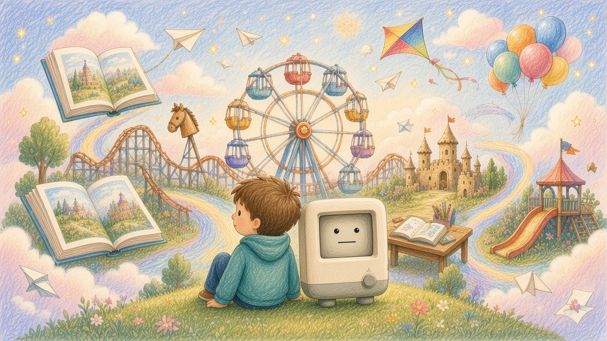
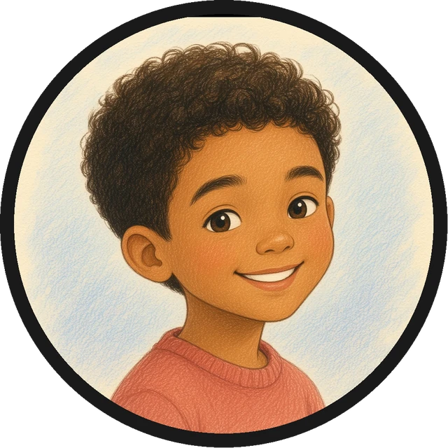

Leo
I used to get lost when the class moved on without me. Now it goes at my speed, and I get my own path — I can actually finish a lesson without feeling behind.

Practice after the lesson. Parents get a short summary.
A short walkthrough of one lesson. Not a live class.
How it feels to learn this way.
Sample voices, written to show how it might feel. Not real reviews.
Leo
I used to get lost when the class moved on without me. Now it goes at my speed, and I get my own path — I can actually finish a lesson without feeling behind.
Maya
If I don't get something, I just say it out loud. It talks me through the hard part until it clicks — not just the right answer, but why.

Owen
I can practice for a few minutes at my desk, in the car, or outside. It's short, but I actually want to do the next bit.
A path that feels like play, and stays clearly structured.
A different route for every child, at their own pace.

Speak naturally, and get help in the moment.

A few minutes, wherever you are.

A small tutoring device. A child can ask a question or snap a problem, practice after the lesson, and parents receive a short summary.
$199 for one device. Ordering is not open yet, so the button on the order page does not take payment.
Yes. There is a short walkthrough of one lesson on this site. It is not a live class, and it does not use a microphone or camera.
After a session, parents can read a short summary. The child does not use that letter.
Accounts and payment are not connected yet. We will open them when ordering starts.
Shipping, returns, and warranty terms have not been published yet. They will appear on the order page when ordering opens.
No. The marks only identify where members of the team studied. They are not an official endorsement.